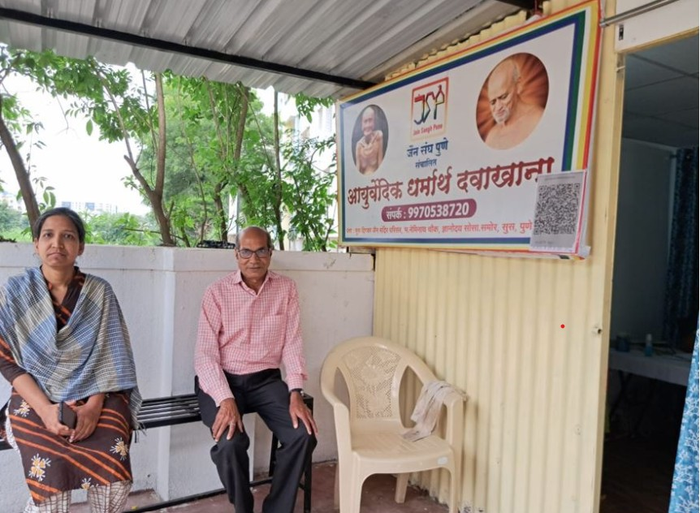
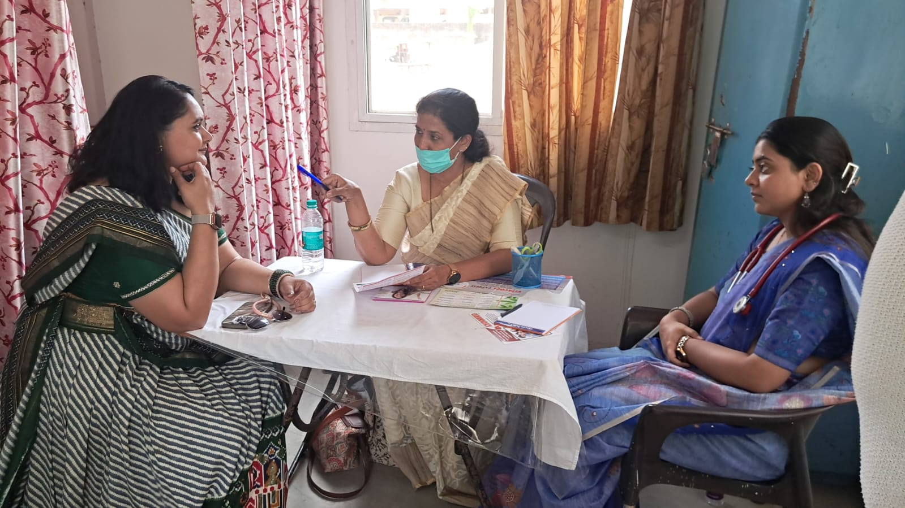
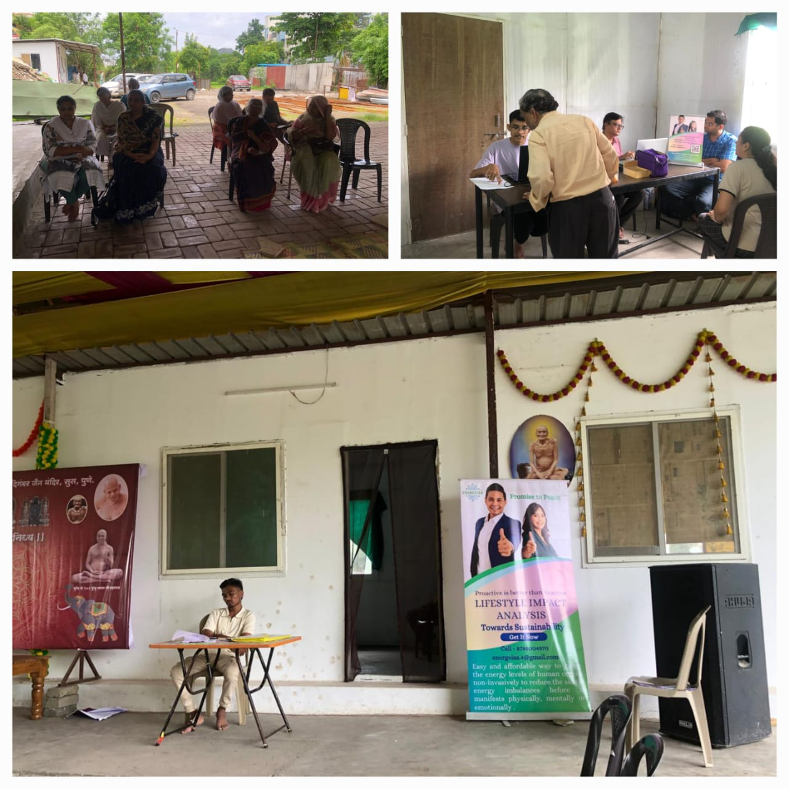
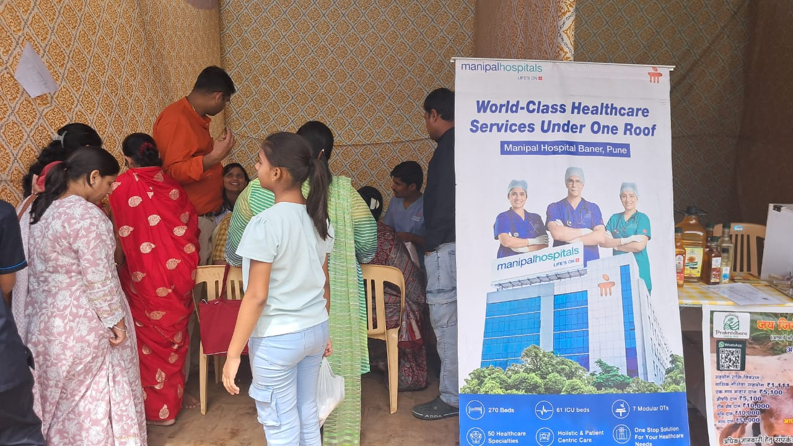

🌿 धर्मार्थ औषधालय, सुस (पुणे)
तीर्थंकर प्रभु द्वारा प्रतिपादित अहिंसक चिकित्सा पद्धति को बढ़ावा देने और समाज को एक स्वस्थ जीवन शैली प्रदान करने के उद्देश्य से, जैन संघ पुणे (JSP) द्वारा वर्ष 2017 में ज्ञानोदय सोसाइटी, सुस (पुणे) में 'जैन चैरिटेबल औषधालय' की शुरुआत की गई थी। दानदाताओं के उदार सहयोग से संचालित यह औषधालय पूरी तरह से सेवा भाव को समर्पित है, जहाँ बेहद कम खर्च पर मरीजों का इलाज किया जाता है।

🩺 शिविर और सेवा गतिविधियाँ (Medical Camps)
Blood Donation Camp
महावीर जयंती और ऐसे ही कई अवसरों पर धर्मार्थ औषधालय ने रक्त-दान शिविर का आयोजन किया, जिसमें लगभग 50 लोगों ने रक्त-दान कर पुण्यार्जन प्राप्त किया।

Consultation Camp
औषधालय द्वारा आयोजित विभिन्न परामर्श एवं स्वास्थ्य जांच शिविरों में समाज के लोगों की हमेशा सक्रिय सहभागिता रही है।



🎯 हमारा उद्देश्य और प्रभाव (Our Mission & Impact)
🌿 प्राचीन एवं अचूक चिकित्सा
औषधालय के माध्यम से अनगिनत लोगों को पुरानी और जटिल बीमारियों (Chronic Diseases) में प्राचीन आयुर्वेदिक पद्धति से अभूतपूर्व लाभ मिला है।
🛡️ अहिंसक चिकित्सा की ओर कदम
आधुनिक एलोपैथी दवाओं में होने वाली हिंसक प्रक्रियाओं और अनैतिक घटकों को छोड़कर, बड़े पैमाने पर लोगों ने शुद्ध एवं अहिंसक आयुर्वेद को अपनाया है।
👶 बच्चों के भविष्य की सुरक्षा
सामान्य गले की खराश या बुखार होने पर भारी मात्रा में एंटीबायोटिक्स के दीर्घकालिक साइड इफेक्ट्स से बचाकर बच्चों को सुरक्षित आयुर्वेद का भरोसा दिया है।
🛡️ कोरोना काल में अनुकरणीय सेवा (COVID-19 Resilience)
- महामारी के दौरान समाज के लोगों को गिलोय जैसी दिव्य जड़ी-बूटियाँ और आयुर्वेदिक दवाएं निशुल्क/सुलभ रूप से उपलब्ध कराई गईं।
- अनुभवी आयुर्वेदिक वैद्यों के माध्यम से ऑनलाइन कॉन्फ्रेंस का आयोजन किया गया, जिसमें लोगों को घर बैठे कोरोना से लड़ने और अपनी इम्यूनिटी बढ़ाने के वैज्ञानिक तरीके सिखाए गए।
🔄 पुनः शुरुआत (August 2022 Launch)
कोरोना काल के अनिवार्य अंतराल (गैप) के बाद, अगस्त 2022 से जैन संघ पुणे द्वारा इस औषधालय को पूरी ऊर्जा के साथ पुनः शुरू किया गया है। आज यह औषधालय पहले की तरह ही जन-जन की सेवा में अग्रणी भूमिका निभा रही है।
"आइए, हम सब मिलकर तीर्थंकर प्रभु के अहिंसा के मार्ग पर चलें और शुद्ध, सात्विक एवं प्राचीन आयुर्वेद को अपने जीवन का हिस्सा बनाएं।"